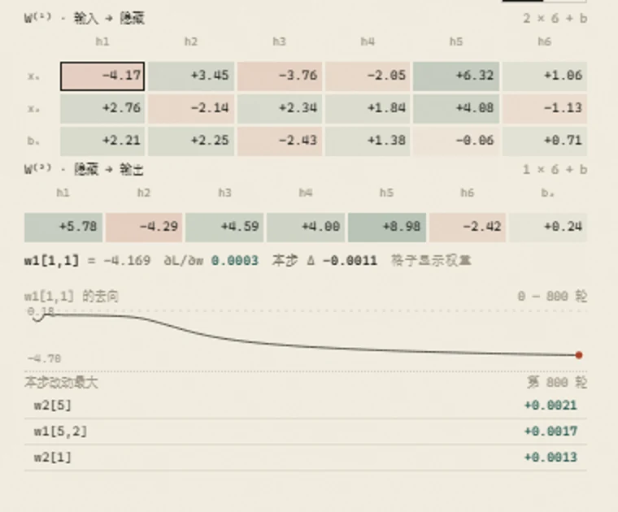

把账摊开：解释一件事，别只给答案
解释一个会自己变化的东西，最省事的办法是录一段视频，或者给一张“训练完成”的图。三秒钟，观众点头，结束。
但这样解释掉的不是“它怎么学会的”，而是“它学会了”这个结论。结论很容易复制，过程不能。所以这个观测台给自己定了三条规矩，每条都对应一个可以点、可以拖的界面。
一、真的算
观测台里没有一帧是预先渲染的。你看到的每一次边界变化，都对应参数真的被改了一次：每轮过 160 个样本，算二元交叉熵，反传，更新，然后存一份快照。
刷新页面，它就重新变回一个什么都不会的网络。没有预训练权重，也没有录好的动画。
这条约束很贵。它意味着首次打开要现算，意味着 800 轮快照要占内存，也意味着某些组合（比如螺旋 + 3 个单元）的结果就是难看，而且没办法“美化”一下。但它换来的是可信：你看到的失败也是真的失败。
二、把账摊开
“模型在学”是一句抽象的话。把它变成具体的东西，只需要一张表：W⁽¹⁾、W⁽²⁾ 和两个偏置的权重、梯度、本步位移，全放在同一张表里，一格一个参数。
表只是第一层。点一个格子，下面会画出它这些轮的去向；再点一个样本，能看到它这一轮的前向值、误差责任和损失。两套账并排放在一起，才能回答“这个参数为什么动了”和“这个点为什么错了”。

这张表还有一个副作用：它让“没有变化”也变得可见。某些隐藏单元整列都是灰的，梯度接近 0，等于没参与训练。这种信息在看损失曲线时是完全看不到的。
三、让时间可倒
每个 epoch 存一份参数快照。800 份、每份 25 个数，加上统计量也就几十 KB。拖动时间轴，边界、网络剖面、账本、单样本的账一起退回去。
可倒不只是“回放”。它让我能在同一个界面上比较第 2 轮和第 800 轮，而不是靠记忆或者来回切换标签页。按一下重播，整段训练会压成十几秒——这也成了我最常用的默认观看方式。
代价
- 内存。800 份快照要留着；如果换成 8 个隐藏单元，参数量涨到 33，快照也跟着涨。
- 首帧。概率场是逐像素算出来的，直接放在主线程会卡。现在的做法是先算到离屏画布上缓存，参数不变就不重画。
- 复杂度。多了时间轴、多了选中态，就有“当前看到的到底是哪一轮”的问题。界面上必须有一处永远写着轮次，否则很容易看串。
不只用于 MLP
这套方法其实和神经网络没关系。任何“看起来会自己变好”的东西，都值得把中间量露出来：编译器的优化过程、排版的视觉回归、搜索框里每条结果的排序分数。
判断标准也很简单：如果关掉动画、只留一张最终结果图，读者还能不能自己复现出这个过程？如果不能，那中间量就该出现在页面上。